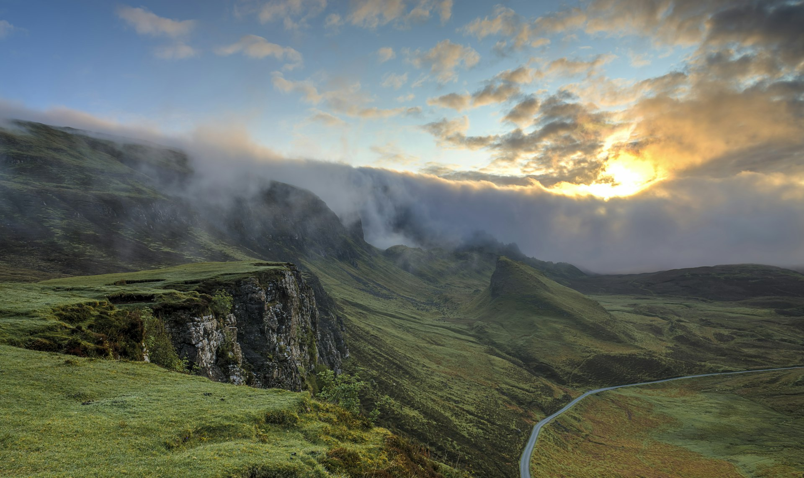
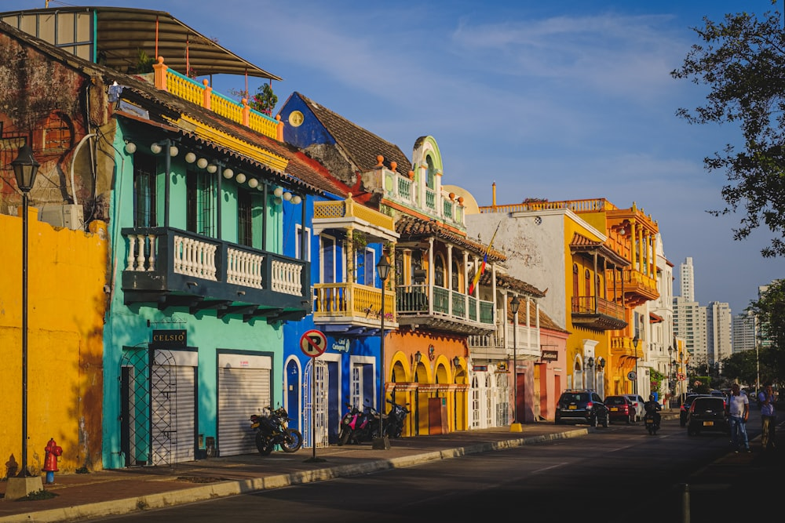
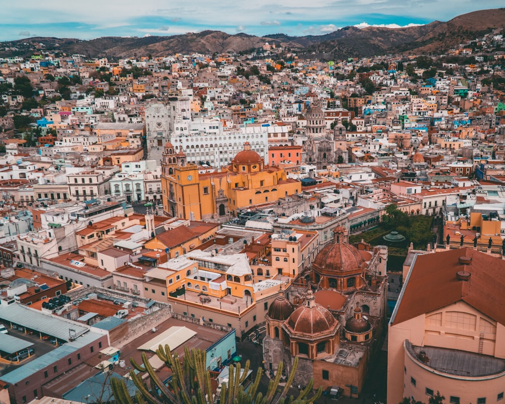
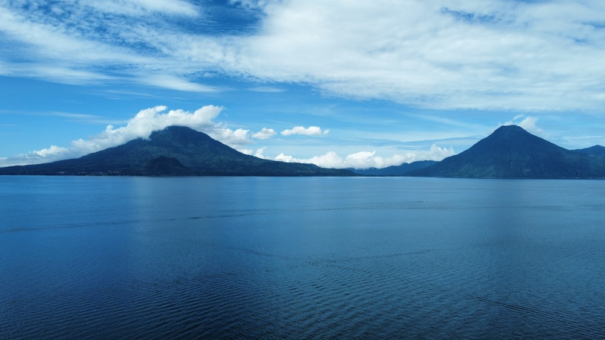
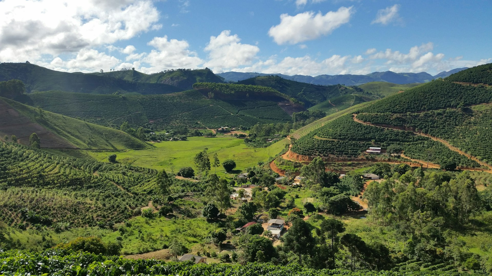

The history of coffeein the Americas,told one country at a time.
Coffee was not born here. It became ours. Five countries, five histories, and the cup your family never stopped pouring.

A seedling crossed the Atlantic in the 1720s. Within a century it had become el café — planted on volcanoes, carried by mules, smuggled across borders, brewed in clay pots. Five countries gave it a soul. These are their stories.
Five countries, five cups.
Colombia
La tierra del tinto
A priest's penance, a nation of cafeteros, and the small black cup that never stops being offered.
Read the story
México
De contrabando y revolución
Seeds that crossed a border in secret, and the clay-pot coffee that fueled a revolution.
Read the story
Venezuela
El país del marrón y el guayoyo
Before oil there was coffee: the Andean harvests that once made Venezuela one of the world's great exporters.
Read the story
Guatemala
Tierra de volcanes
When the dye trade collapsed, a country replanted itself in coffee — on the slopes of living volcanoes.
Read the story
Brasil
O gigante do cafezinho
A bouquet with hidden seedlings, an empire of fazendas, and the tiny sweet cup a whole country runs on.
Read the story
Be first to taste the origin that tastes like home.
We're launching soon — starting with these five origins. Leave your email and get each country's story before anyone else.
No spam. Solo café, historias reales y fotografía real — nada de IA.